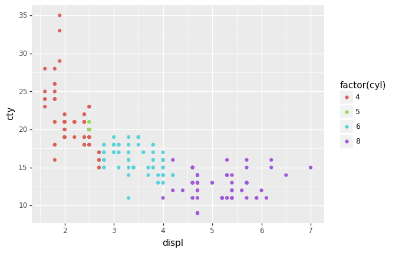

Plotnine:Python版的ggplot2绘图包

目录
R语言的ggplot2绘图能力超强，python虽有matplotlib，但是语法臃肿，使用复杂，入门极难，seaborn的出现稍微改善了matplotlib代码量问题，但是定制化程度依然需要借助matplotlib，使用难度依然很大。
好消息是python中有一个plotnine包，可以实现绝大多数ggplot2的绘图功能，两者语法十分相似，R和Python的语法转换成本大大降低。
- plotnine文档 https://plotnine.readthedocs.io/en/latest/
- R语言ggplot2文档 https://ggplot2.tidyverse.org/reference/index.html
安装
!pip3 install plotnine
准备数据
from plotnine.data import mpg
#dataframe
mpg.head()
.dataframe tbody tr th {
vertical-align: top;
}
.dataframe thead th {
text-align: right;
}
| manufacturer | model | displ | year | cyl | trans | drv | cty | hwy | fl | class | |
|---|---|---|---|---|---|---|---|---|---|---|---|
| 0 | audi | a4 | 1.8 | 1999 | 4 | auto(l5) | f | 18 | 29 | p | compact |
| 1 | audi | a4 | 1.8 | 1999 | 4 | manual(m5) | f | 21 | 29 | p | compact |
| 2 | audi | a4 | 2.0 | 2008 | 4 | manual(m6) | f | 20 | 31 | p | compact |
| 3 | audi | a4 | 2.0 | 2008 | 4 | auto(av) | f | 21 | 30 | p | compact |
| 4 | audi | a4 | 2.8 | 1999 | 6 | auto(l5) | f | 16 | 26 | p | compact |
快速作图qplot
我们先直接看最简单好用的快速作图函数qplot(x, y, data)
- 横坐标displ
- 纵坐标cty
- 数据mpg
from plotnine import qplot
qplot(x='displ',
y='cty',
data=mpg)
<ggplot: (322851325)>
ggplot图层
qplot是快速作图函数，如果想让图更好看，进行私人订制，那么我们需要进行图层设计
首先设置ggplot图层（相当于买了一个高级画布），
- 数据mpg
- 横坐标x轴为displ
- 纵坐标y轴cty
在plotnine中，变量所对应的数据均可通过字段名调用
from plotnine import ggplot, geom_point, aes
ggplot(aes(x='displ', y='cty'), mpg)
<ggplot: (321957793)>
图层叠加
我们可以看到，已经绘制出一个空的ggplot图层，x轴为displ，y轴为cty。
接下来我们给这个图层上加上数据对应的散点，使用geom_point()直接追加在ggplot图层之上即可。
(
ggplot(aes(x='displ', y='cty'), mpg)
+ geom_point()
)
<ggplot: (322466061)>
color
在上图中，散点是没有区分每辆车的气缸数cyl。
在geom_point()中，我们可以按照气缸数cyl分门别类，按照颜色显示出来
(
ggplot(aes(x='displ', y='cty'), mpg)
+ geom_point(aes(color='cyl'))
)
<ggplot: (323647173)>
上图挺好看的，有时候需要绘制的字段是离散型数值，但是上色后可能不够明显，需要声明该字段为离散型。这时候用factor()来告诉plotnine，这个字段是离散型数值
(
ggplot(aes(x='displ', y='cty'), mpg)
+ geom_point(aes(color='factor(cyl)'))
)

<ggplot: (321918425)>
size
有时候为了增加可视化显示的维度数，还可以考虑加入点的大小size
(
ggplot(aes(x='displ', y='cty'), mpg)
+ geom_point(aes(size='hwy'))
)

<ggplot: (323399013)>
梯度色
如果你想自己设置颜色的梯度，可以通过scale_color_gradient设置
from plotnine import scale_color_gradient
(
ggplot(aes(x='displ', y='cty'), mpg)
+ geom_point(aes(color='hwy'))
+ scale_color_gradient(low='blue', high='red')
)
<ggplot: (323622897)>
条形图
plotnine中可绘制的图有很多，刚刚已经讲了散点图，接下来我们看看plotnine中的条形图。
首先准备一下数据
import pandas as pd
df = pd.DataFrame({
'variable': ['gender', 'gender', 'age', 'age', 'age', 'income', 'income', 'income', 'income'],
'category': ['Female', 'Male', '1-24', '25-54', '55+', 'Lo', 'Lo-Med', 'Med', 'High'],
'value': [60, 40, 50, 30, 20, 10, 25, 25, 40],
})
df['variable'] = pd.Categorical(df['variable'], categories=['gender', 'age', 'income'])
df['category'] = pd.Categorical(df['category'], categories=df['category'])
df
.dataframe tbody tr th {
vertical-align: top;
}
.dataframe thead th {
text-align: right;
}
| variable | category | value | |
|---|---|---|---|
| 0 | gender | Female | 60 |
| 1 | gender | Male | 40 |
| 2 | age | 1-24 | 50 |
| 3 | age | 25-54 | 30 |
| 4 | age | 55+ | 20 |
| 5 | income | Lo | 10 |
| 6 | income | Lo-Med | 25 |
| 7 | income | Med | 25 |
| 8 | income | High | 40 |
from plotnine import ggplot, aes, geom_text, position_dodge, geom_point
#调整文本位置
dodge_text = position_dodge(width=0.9) # new
(
ggplot(df, aes(x='variable',
y='value',
fill='category')) #类别填充颜色
+ geom_col(position='dodge',
show_legend=False) # modified
+ geom_text(aes(y=-.5, label='category'), # new
position=dodge_text,
color='gray', #文本颜色
size=8, #字号
angle=30, #文本的角度
va='top')
+ lims(y=(-5, 60)) # new
)

<ggplot: (334727813)>
from plotnine.data import economics_long
economics_long.head()
.dataframe tbody tr th {
vertical-align: top;
}
.dataframe thead th {
text-align: right;
}
| date | variable | value | value01 | |
|---|---|---|---|---|
| 0 | 1967-07-01 | pce | 507.4 | 0.000000 |
| 1 | 1967-08-01 | pce | 510.5 | 0.000266 |
| 2 | 1967-09-01 | pce | 516.3 | 0.000764 |
| 3 | 1967-10-01 | pce | 512.9 | 0.000472 |
| 4 | 1967-11-01 | pce | 518.1 | 0.000918 |
from plotnine import ggplot, aes, geom_line
(
ggplot(economics_long, aes(x='date', y='value01', color='variable'))
+ geom_line()
)
<ggplot: (334895445)>
plotnine目前已经支持绝大多数ggplot2，但是文档方面没有ggplot2全，所以学习plotnine时可以参考ggplot2。
- plotnine文档 https://plotnine.readthedocs.io/en/latest/
- R语言ggplot2文档 https://ggplot2.tidyverse.org/reference/index.html
支持
分享不易，谢谢大家分享（或红包）支持^_^